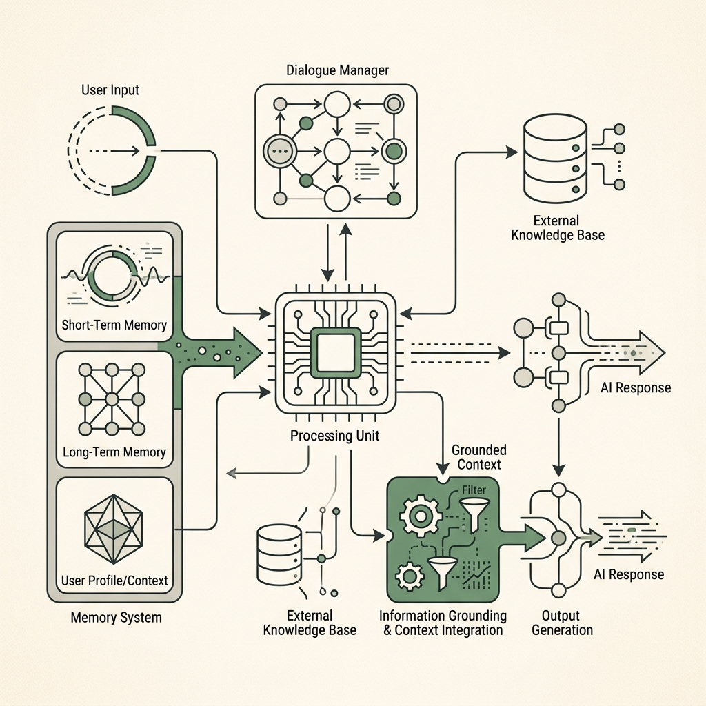
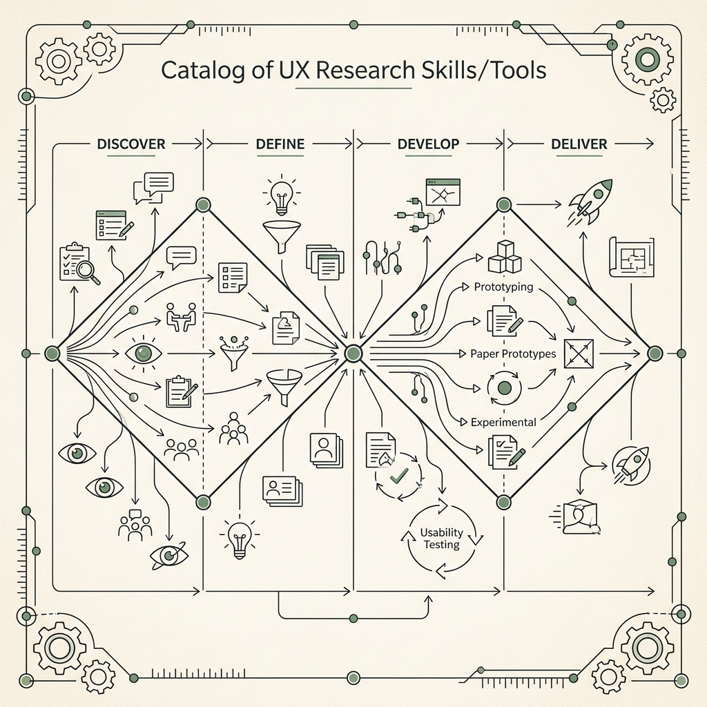
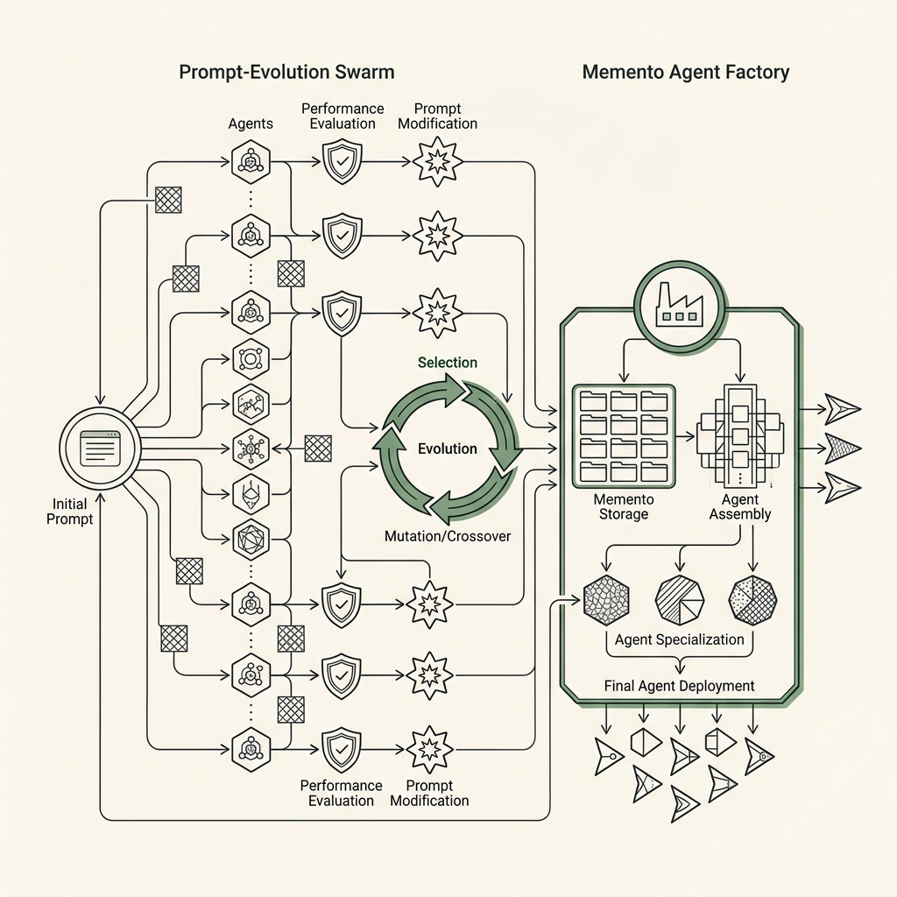
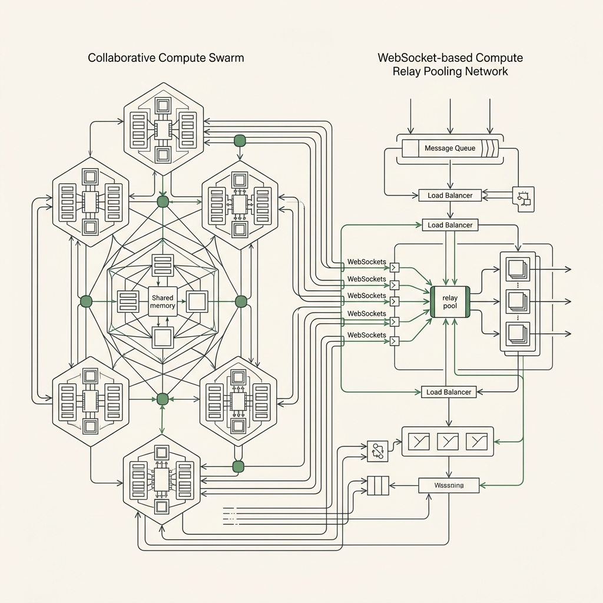
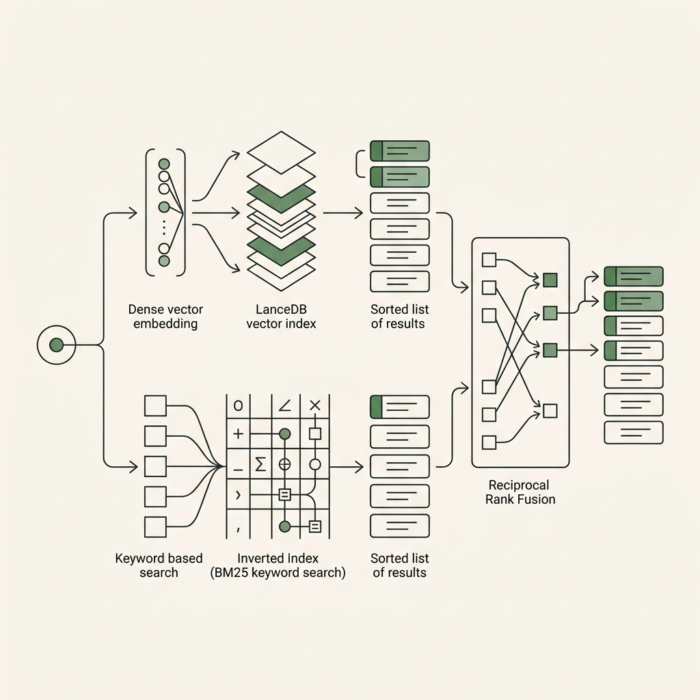
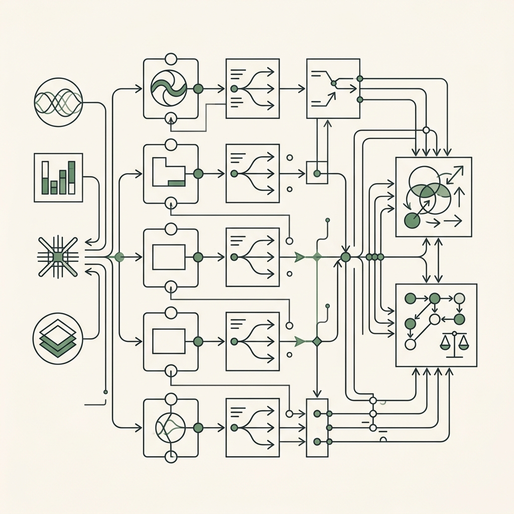
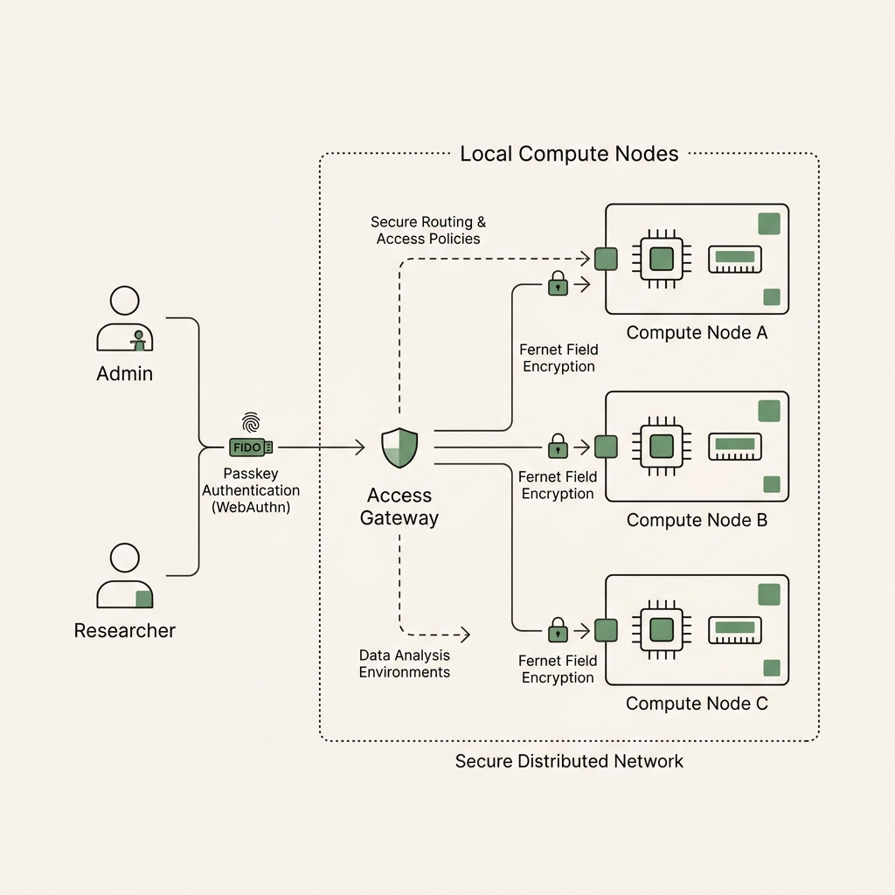
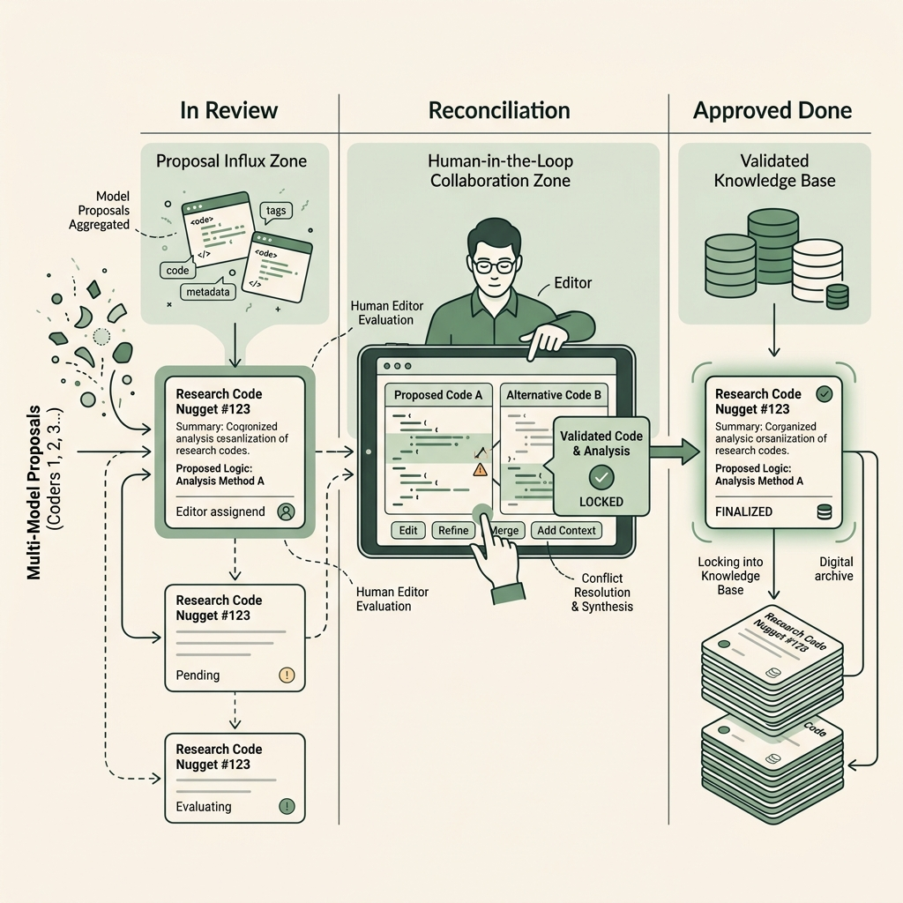
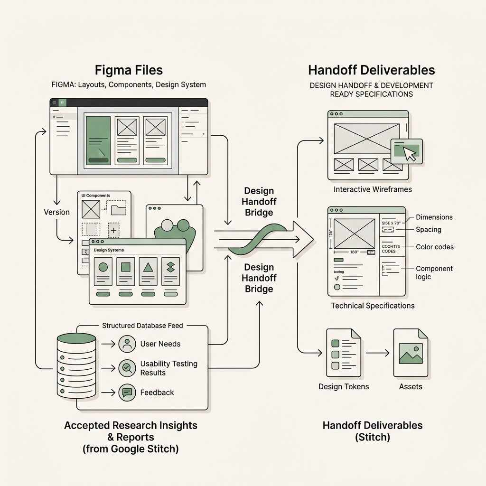
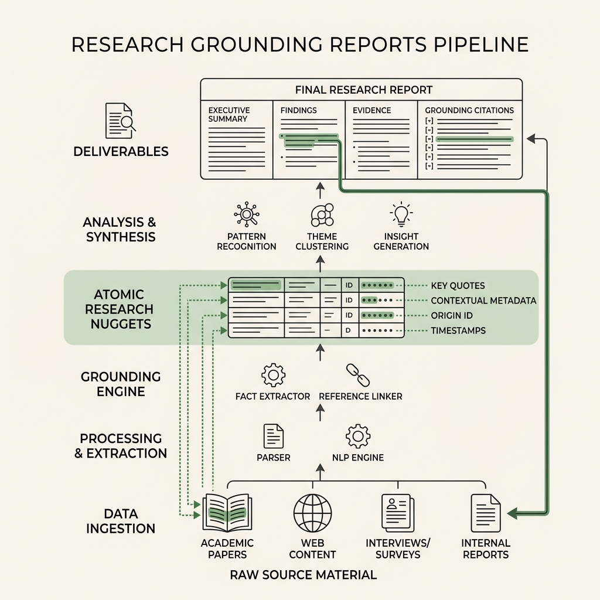

Local-first AI UX research workspace
Open-source UX Research agents and tools. Human-in-the-loop AI for UXR.
Istara is a local-first agentic platform for UX Research. Donate AI compute between computers to one single Istara server and have many agents working together on different UX tasks, using 50+ UX skills and agents that self-evolve. Keep data local and encrypted, secure access for teams.
brew install --cask henrique-simoes/istara/istara

- Local-first SecurityRun workspace inference and model routing entirely on your own local machine.
- Evidence-gated RigorKeep report materials tied to source spans, inter-coder review, and reconciled tasks.
- Compute Swarm PoolUse project-authorized local models and donated hardware compute with route evidence.
Install first
Start with the shortest path, then keep the docs nearby.
The homepage keeps installation visible because the fastest path to understanding Istara is running it with your own research project.
Recommended on macOS
Homebrew cask
Use the managed cask for the simplest install and update flow.
brew install --cask henrique-simoes/istara/istaramacOS / Linux
Shell installer
Use the repository installer when you want a guided command-line setup.
curl -fsSL https://raw.githubusercontent.com/henrique-simoes/Istara/main/scripts/install-istara.sh | bashDevelopment / Windows notes
Source checkout
Use the repository for development, Docker-based work, and current platform notes.
git clone https://github.com/henrique-simoes/Istara.gitCore Swarm Capabilities
Equip your team with five specialized AI agents.
Run focused UX research skills and maintain complete control over how data is processed, analyzed, and stored.
Intelligent Grounded Chat
Ask research questions without losing grounding. Project chat keeps source material, accepted evidence, and task context close to the conversation for fully reviewable evidence.
Istara's source-bounded reasoning and context DAG routing ensure that every AI claim is completely backed by source citations. Powered by semantic vector search.
Explore Architecture Deep-Dive →
53+ UX Research Skills
Run focused UX research skills from competitive analysis, card sorting, and accessibility audits to SUS usability scoring and design briefs.
Workflows are organized across Discover, Define, Develop, and Deliver phases of the Double Diamond. The execution harness supports custom skill creation and automatic prompt-evolution.
Explore Architecture Deep-Dive →
Self-Evolving Agents & Personas
Evolve Cleo, Sentinel, Pixel, Sage, and Echo from project-scoped process memory and verified outcomes. Create new agents at runtime via Memento agent factory.
The runtime Memento agent factory reads from project-scoped ReasoningBank memory stores, allowing agents to evolve their prompts and strategies governed by security contracts.
Explore Architecture Deep-Dive →
Collaborative Compute Swarm
Share GPU and CPU capacity with team members via a WebSocket-based Compute Relay. Route inference requests to local nodes with capability detection and automatic failover.
Idle hardware forms a secure WebSocket-based compute relay pool. Requests are dynamically routed to local donor nodes with automatic fallback queue management.
Explore Architecture Deep-Dive →
Technical Architecture
Built around one research process, not scattered AI tools.
Every feature that touches research data should either enter the Research Spine or consume accepted evidence from it.
Hybrid RAG + Graph RAG
Get exact evidence with Hybrid RAG (LanceDB vector + BM25 keyword search blended via Reciprocal Rank Fusion) and explore relationships across sources, codes, and tasks via Graph RAG.
Graph answers must backfill exact evidence before promotion. Hybrid rank blending prevents semantic drift and ensures precise reference lookup across multi-thousand-page repositories.
Explore Architecture Deep-Dive →
Multi-Model Ensemble Health
Independent atomic extraction and open coding reduce bias. Distinct project-authorized models independently code same evidence units with Fleiss' Kappa reliability before human reconciliation.
Real-time inter-coder consensus metrics score reliability across models, automatically flagging diverging classifications for human adjudication before promotion.
Explore Architecture Deep-Dive →
Distributed Compute & Roles
Idle hardware forms a collaborative compute swarm. Strict separation of access roles (Admin/Researcher) ensures secure operation, protected by WebAuthn passkeys and Fernet field encryption.
Cryptographic passkeys and field-level AES encryption prevent data leaks, keeping active local SQLite workspaces completely isolated and secure.
Explore Architecture Deep-Dive →
Human-in-the-Loop Kanban
Agents pick up tasks and propose findings, but they remain provisional and in review. Human-in-the-loop review states and reconciliation ensure only accepted findings enter approved Done tasks.
The human researcher retains absolute control. Task-level review gates prevent automated findings from leaking into reports without researcher sign-off.
Explore Architecture Deep-Dive →
Stitch & Figma Interfaces
Import Figma files to link screen design decisions to accepted research evidence. Use the Google Stitch MCP server to generate wireframes and specs directly from reportable insights.
Bidirectional canvas syncing connects design layout layers to qualitative research nuggets. Enables evidence-backed design handoffs that developers can trace immediately.
Explore Architecture Deep-Dive →
Grounded Decisions & Reports
Export research reports directly from approved Done tasks. Ground every recommendation back through the spine: accepted atoms → facts → insights → recommendations linked to raw source spans.
Mathematically grounded in primary sources. Generates interactive trace indicators (e.g. [Evidence #42]) within compiled documents, allowing absolute audibility.
Explore Architecture Deep-Dive →
Equip Your Swarm
53 Governed UX Research Skills by Double Diamond Category
Every skill executes securely inside the Research Spine and records execution health, model-routing stats, and prompt evolution proposals.
🔍 Discover Phase
14 Skills- User Interviews
- Contextual Inquiry
- Survey Design & Ingest
- Competitive Analysis
- Diary Studies
- Survey AI Response Detection
🎯 Define Phase
12 Skills- Thematic Analysis (Inductive)
- Kappa Inter-Coder Analysis
- Affinity Mapping
- Empathy Mapping
- JTBD & Persona Creation
- Journey & Flow Mapping
🛠️ Develop Phase
10 Skills- Usability Testing Analysis
- Heuristic Evaluation
- Cognitive Walkthrough
- Card Sorting & Tree Testing
- A/B Test Analysis
- Design Critique
📦 Deliver Phase
10 Skills- Design System Audit
- SUS/UMUX Usability Scoring
- NPS Driver Analysis
- Developer Handoff Docs
- Regression Impact Analysis
- Longitudinal Tracking
⚙️ Cross-Phase Metacognitive Skills (7 Skills)
How evidence becomes reportable
From source material to approved reports.
Atomic research findings become trusted only after source-grounded extraction, coding, reliability checks, reconciliation, and human-approved Done tasks.
- 01Sources Ingestion
- 02Evidence Units
- 03Independent Coding
- 04Ensemble Reliability
- 05Human Reconciliation
- 06Accepted Atoms & Insights
- 07Approved Done Tasks
- 08Traceable Reports